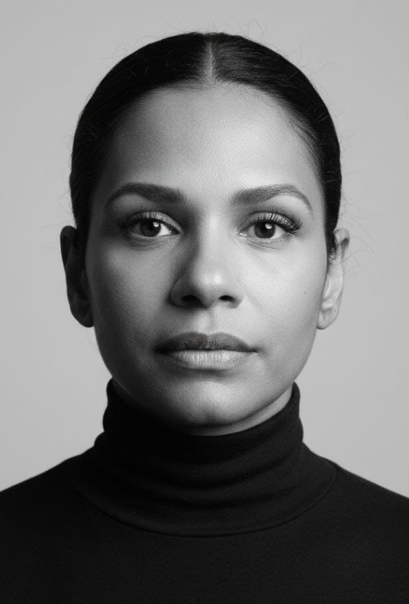

Pet Shop Pet Feliz
Landing page responsiva com HTML, CSS e JavaScript — formulário com validação, cards com aspect-ratio e design moderno.
Ver no GitHub ↗Olá, eu sou a
Engenharia de Produção → Ciência de Dados
"Da pesquisa em processos à ciência de dados — rigor acadêmico na transformação digital"

Tenho bacharelado em Engenharia de Produção e mestrado em Engenharia Têxtil pela UFSC, com pesquisa focada em Indústria 4.0 no setor têxtil. Minha trajetória não foi linear: formei-me aos 37 anos, após recomeçar do zero depois de um casamento de 11 anos e com dois filhos para criar.
Voltei a estudar após minha separação em 2010, determinada a construir um futuro melhor. Passei no vestibular, conquistei bolsa integral pelo PROUNI e me formei com coeficiente 9.0. Anos depois, ingressei no mestrado visando a docência, concluindo com coeficiente 8.0.
Hoje, moro em Blumenau/SC com dois dos meus três filhos, o mais velho, de 26
anos - autista e surdo - e o caçula, também autista, nascido em 2022. O segundo, com 23 anos, hoje é casado e formado.
Sou movida pela certeza de que
conhecimento, tecnologia e determinação podem transformar vidas.
Atualmente, produzo conteúdo técnico digital e me especializo em tecnologia e análise de dados — meu plano para conquistar uma vaga remota e continuar cuidando de quem mais amo.
Blumenau, Santa Catarina
Mestra em Engenharia Têxtil (UFSC)
Pesquisadora em Indústria 4.0
Data Analyst em formação
Universidade Federal de Santa Catarina (UFSC)
Área: Desenvolvimento de processos e produtos têxteis
Linha de Pesquisa: Engenharia de processos e produtos têxteis
Tema: A Indústria 4.0 no setor têxtil
Coeficiente Geral: 8.0
CESUPA - Belém/PA
Bolsa integral - PROUNI
TCC: Proposição de um Plano de Manutenção Preditiva em Equipamentos Críticos em uma Distribuidora de GLP
Coeficiente Geral: 9.0
Microsoft
Google Cloud
Cisco NetAcademy
SESI/SENAI - SCTEC | Carreira Tech
Cursos PrograMaria
SESI/SENAI - SCTEC
Ferramentas e tecnologias que utilizo no dia a dia
Sólido conhecimento em tecnologias habilitadoras e Digital Lean
Pandas, Scikit-learn, Matplotlib — uso básico/inicial
Desenvolvimento de landing pages responsivas
Interatividade e validação de formulários (em progresso)
VS Code, GitHub, Google Sheets, SQL
Produção de material digital — Pack do Engenheiro 4.0
Nativo
Nível B2
Landing page responsiva com HTML, CSS e JavaScript — formulário com validação, cards com aspect-ratio e design moderno.
Ver no GitHub ↗Este site! Meu portfólio profissional completo com formação, habilidades, projetos e contato.
Ver no GitHub ↗Consolidar minha transição para a área de dados, unindo meu rigor acadêmico à análise de dados para gerar insights reais.
Aplicar meu conhecimento em tecnologias habilitadoras para transformar processos industriais com eficiência e inovação.
Conquistar uma vaga remota que me permita conciliar minha carreira com o cuidado dos meus filhos.
Estou aberta a oportunidades, parcerias e trocas profissionais
Email:
anama.dias@gmail.com
LinkedIn:
linkedin.com/in/anamariadias
GitHub:
github.com/Engineer-Ana
Localização:
Blumenau, Santa Catarina